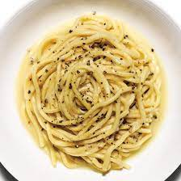

Odin's Cacio e Pepe Recipe

Description
Literally “cheese and pepper,” this minimalist cacio e pepe recipe is like a stripped-down mac and cheese.
Ingredients
- Kosher salt
- 6oz. pasta (such as egg tagliolini, bucatini, or spaghetti)
- ½3 Tbsp. unsalted butter, cubed, divided
- 1 tsp. freshly cracked black pepper
- ¾ cup finely grated Grana Padano or Parmesan
- ⅓ cup finely grated Pecorinoe
Steps to make
- Bring 3 quarts water to a boil in a 5-qt. pot. Season with salt; add pasta and cook, stirring occasionally,
until about 2 minutes before tender. Drain, reserving ¾ cup pasta cooking water.
- Meanwhile, melt 2 Tbsp. butter in a Dutch oven or other large pot or skillet over medium heat. Add
pepper and cook, swirling pan, until toasted, about 1 minute.
- Add ½ cup reserved pasta water to skillet and bring to a simmer. Add pasta and remaining butter.
Reduce heat to low and add Grana Padano, stirring and tossing with tongs until melted. Remove pan
from heat; add Pecorino, stirring and tossing until cheese melts, sauce coats the pasta, and pasta is
al dente. (Add more pasta water if sauce seems dry.) Transfer pasta to warm bowls and serve.
Back to main page